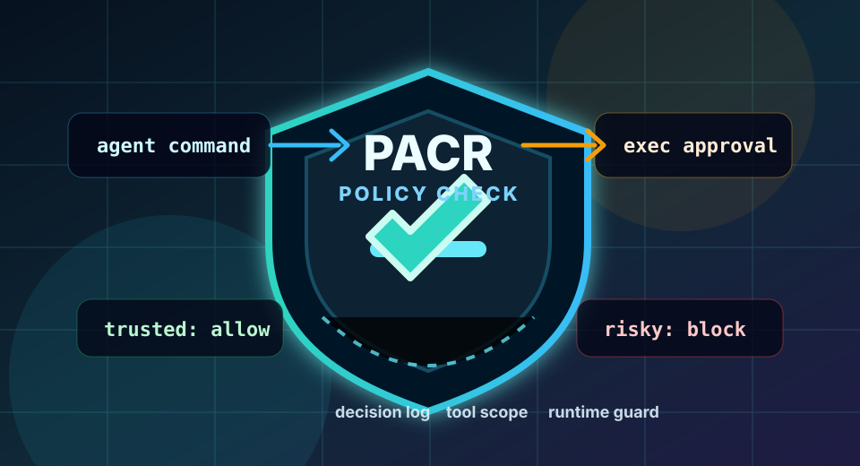

PACR: Secure runtime defense layer for OpenClaw AI agents
Ongoing research project securing OpenClaw against prompt injection and unsafe tool execution. Built a PACR security module, tested trusted and malicious scenarios, added decision logging, and integrated policy checks into the exec approval runtime path to block risky commands before execution.
TypeScriptPythonNode.jspnpmLinuxShell scriptingOpenClawLLM agentsPrompt injection defenseRuntime securityPolicy-based access controlSecure tool executionAudit loggingGit